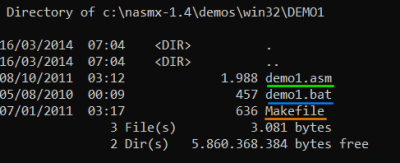

Assembler a file
To verify that everything is configured properly we can try to assembly an
assembly file to an
object file from command line navigate to: C:\nasmx-1.4\demos\win32\DEMO1
 ◇
demo1.asm is the file containing the assembly code
◇
demo1.bat is a script that will automatically assemble and link the
demo1.asm file to obtain the executable file
◇
makefile contains all the data and commands needed to transform the source code files to an executable program
create object file from the .asm file
nasm -f win32 demo1.asm -o demo1.obj
-f →
format of the output file; in this case Microsoft object file format for 32-bit OS
-o → name of the
output file